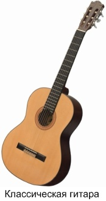
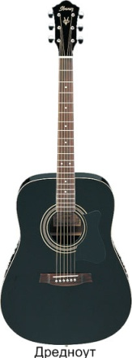
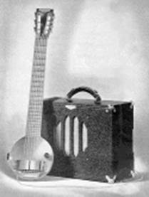
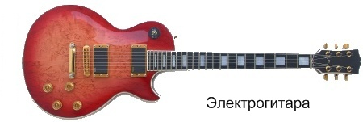
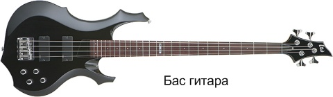
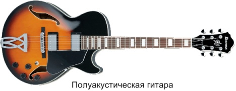

Виды гитар
1. Акустическая
Акустическая гитара имеет полый резонирующий корпус с отверстием - резонатором.
На таких гитарах можно играть без использования какой-либо дополнительной аппаратуры (вроде усилителей).
Они отлично подходят для сольных концертов и дворовых посиделок с друзьями. Акустические гитары в свою очередь делятся на несколько подвидов, вот несколько самых известных:

Классическая.
Это наиболее консервативный вид инструмента. Именно она является прямым потомком той самой испанской гитары.
На классических гитарах, как правило, стоят нейлоновые струны, у них широкий гриф, и играют на них обычно без использования медиатора (маленькой округлой пластинки, которой бьют по струнам).
Звук при этом получается мягкий и негромкий. Поэтому эти инструменты наиболее подходят для игры классической музыки и потому их чаще всего используют для обучения в музыкальных школах.
И в дополнение, если вы купили гитару с нейлоновыми струнами, то ни в коем случае не ставьте на неё металл. Это может привести к повреждению инструмента.

Дредноут.
Также их называют Кантри или Вестерн гитарами. Это самые популярные акустические гитары для игры неклассической музыки.
Этим они обязаны громкому звуку и приспособленности к игре в самых разных стилях. На них ставятся металлические струны и играют в основном медиатором.
Джамбо
Эти гитары отличаются большими корпусами и очень громким (даже по сравнению с дредноутом) звуком.
Они наиболее подходят для аккомпанемента и используются ,прежде всего, в Рок, Поп, Блюз, Кантри музыке.
В наше время эти гитары стали большой редкостью. Так как эти гитары также предназначены для игры медиатором - на них стоят металлические струны, а на корпусе предохраняющая пластиковая накладка.
2. Электроакустическая
Электроакустическая по виду ничем не отличается от акустической и также как и в случае с первой, на ней можно играть без какой-либо аппаратуры.
Всё разница в том, что в неё установлен темброблок, позволяющий подключать ее к усилителю. Нередко такие гитары снабжаются встроенным тюнером и эквалайзером.
Также существует возможность купить акустическую гитару и сделать из неё электроакустическую, врезав в корпус темброблок.
3. Электрогитара
Об этих гитарах я расскажу подробнее, поскольку с её появлением в мире музыки произошёл настоящий фурор.
А появилась она в 1930 г., когда уволенный из национальной компании струнных инструментов (National String Instrument Company) Джордж Бишамп (George Beauchamp) изобрёл электрический звукосниматель.

Принцип был следующий: проводник (в нашем случае струна), колеблющийся в поле, создаваемом одним или несколькими постоянными магнитами, производит изменения в этом поле, которое в свою очередь производит переменный ток в проволоке намотанной вокруг этих магнитов.
Сила электрического тока пропорциональна амплитуде колебаний проводника в магнитном поле. Этот же принцип лежит в основе электромоторов, генераторов, игл фонографа и акустических динамиков.
После чего Бишамп совместно с Гарри Уотсоном (Harry Watson), управляющим завода National String Instrument Company при помощи ручных инструментов всего за несколько часов создал первую в мире электрогитару. Ее назвали «сковорода» (Frying Pan).
С этого момента электрогитара начала своё шествие по планете, за прошедшее время она приобрела более совершенную форму и получила множество технических улучшений.
Отличительная особенность современной электрогитары это цельный тонкий корпус, в котором почти нет пустого пространства. Звук снимается датчиками - звукоснимателями и преобразуется в электрический сигнал, который для прослушивания необходимо усилить.
На такой гитаре нельзя играть без усилителя. На электрогитарах помимо всего часто устанавливается несколько различных звукоснимателей, для того чтобы разнообразить тембр звука, а также регуляторы громкости и тембра.
Ну и конечно же я не мог не упомянуть о бас гитаре. Всё началось с потребности в более громком басовом инструменте, возникшей ещё в 20-е года, когда на сценах бушевал джаз.
В оркестрах проблема решалась количеством – четыре контрабасиста играли одну и ту же мелодию, в джазовых же коллективах контрабас было почти не слышно.
В 1935 году человеком по имени Пол Татмарк (Paul Tutmarc) была создана первая бас-гитара, которую при игре держали горизонтально, а не вертикально. Называлась она Model #736 Electric Bass Fiddle.
У гитары были несомненные плюсы – её было легче транспортировать, на ней было легче играть, и её было лучше слышно.
Бас гитара отличается от остальных длинным грифом и меньшим в отличии от остальных гитар числом струн (обычно четыре), также струны толще чем у обычной электрогитары.
Они используются, прежде всего, для придания глубины и насыщения звуковой гаммы музыкального произведения. Поэтому представить современную рок-группу без бас гитары не предоставляется возможным.
4. ПОЛУАКУСТИЧЕСКАЯ
ПОЛУАКУСТИЧЕСКАЯ или, как её ещё называют, джазовая гитара сочетает в себе плюсы, как акустики, так и электрогитары.
От первой ей достался полый корпус с резонирующими отверстиями, от второй звукосниматели и вся электронная начинка.
Хоть у такой гитары и есть черты акустики, играть на ней без усилителя нельзя, так как отсутствует большое резонаторное отверстие на верхней деке и пустого пространства внутри неё слишком мало.
Гитары этого типа чаще всего вы можете услышать в джазе, за что они и получили второе название.
